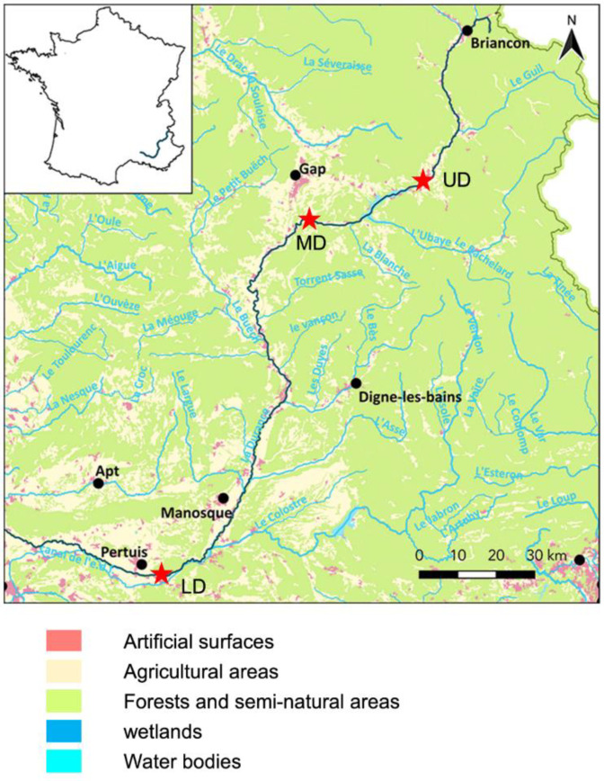

Chapter 18 Summary
You have learnt a lot during this course. This chapter will therefore summarise what you have done.
18.1 Dataset

You were introduce to the 16S dataset in the intro. This consisted of samples from 3 parts of the Durance river (UD, MD, & LD). This is across a gradient of anthropisation. Unfortunately we were not able to glean to much information on the differences due to low power, only 3 replicates per ENV sample.
The more interesting metadata grouping was that of the culture. We were interested if 3 different media (TSA, KBC, and CVP) had different profiled communities than the ENV samples. They were found to be very different compared to the ENV samples. Some differences between the media groupings were also found. Overall, any differences between the sites were hard to determine due to the large differences between media.
To properly determine the differences across the anthropisation gradient it would be best to use a good amount of environmental samples. It may also help to sample more sites along the gradient.
We discovered these findings through our analysis.
18.3 Taxonomy

We investigated the taxonomic composition of our samples.
- Chapter 10: Creation of taxonomic relative abundance tables.
- Chapter 11: Produced heat maps and bar plots of taxa relative abundances
- We also learnt how to aggregate rare taxa to produce fewer taxa groups for plotting.
- Chapter 12: Produced family and genus based taxa plots.
With our taxa plots we saw that the biggest difference was caused by the media. The ENV samples appear to have the most diversity with many different taxa groups. The media samples were mostly composed of Proteobacteria & Firmicutes.
Due to the difference of media we cannot see any clear differences between the sites.
18.4 Diversity analysis

Prior to alpha & beta diversity analysis we carried out rarefaction to normalise the depths between samples in Chapter 14. This is a controversial technique, we carry it out due to the logic and the fact the QIIME2 developers recommend it. Please make you own decision.
Two of the leading papers are:
- Waste Not, Want Not: Why Rarefying Microbiome Data Is Inadmissible (McMurdie & Holmes 2014).
- To rarefy or not to rarefy: robustness and efficiency trade-offs of rarefying microbiome data (Hong et al, 2022).
18.4.1 Alpha & beta

With our rarefied table we carried out diversity analysis.
- Chapter 15: Produced alpha violin plots and statistics to compare the diversity of groups.
- Chapter 16: Produced MDS plots based on pairwise distance metrics. Along with statistics this allowed us to determine how similar/dissimilar samples were to each other.
The alpha diversity showed significant differences between the media and ENV samples. Additionally, the alpha metrics between the 3 media groupings were also significantly different. This was the case for observed ASVs and the Chao1 estimator which had much higher values in the ENV samples.
Although the ENV samples had higher Shannon scores (diversity), the values were also wide spread leading to lack of significance when comparing the ENV to CVP and TSA samples.
No difference was found when comparing the sites.
The beta diversity analysis found significant difference between all the media groupings. Clustering of the media groups was also clearly visible in the MDS plots.
Interestingly the CVP and KBC samples had relatively tight clusters that were quite near each other. The TSA and ENV samples had very loose clusters indicating large differences within the group. There is also some presence of clustering by site within each media group which appears to cause the main differences within the groups.
Unfortunately we are not able to detect any differences between sites due to power and the biggest differences cause by media.
18.4.2 Differential abundance anlaysis

After diversity analysis we carried out differential abundance analysis in chapter 17. This was carried out with ANCOM whilst taking into account both the media and site information.
We found many bacterial classes with lower abundances in the media samples compared to the ENV samples. We only found 2 classes with higher abundance in the media samples compared to the ENV samples. This indicates the media are selecting for only a few classes and many bacteria cannot survive on the media. This biologically makes sense but also corroborates what we have seen in our other analyses.
18.5 Findings

In chapter 2 we asked some questions about our dataset. Let's try to answer them.
18.5.1 Anthropisation gradient

How does the bacterial communities change across the anthropisation gradient?
Due to the vast difference caused by the media we were not able to determine this. You could try to remove all but the ENV samples to determine this. However, you would not have much power with only 9 samples (3 sites by 3 replicates).
18.5.2 Replicate differences

Is there a difference in the replicates of one site and media combination? I.e. do any of the media produce inconsistent profiles?
There are inconsistencies between the replicates of site and media combinations. However, the biggest inconsistencies are within the TSA samples. followed by the ENV samples This is shown by the loose clustering in the beta diversity of the these sample and the tight clustering for CVP & KBC samples. This indicates that variation within groups may be caused by the sample variation rather than media inconsistencies. In fact the KBC and CVP seem to "normalise" the community profiles. This is again hard to determine due to small numbers of replicates.
18.5.3 Site or media

Is there more difference between the sites or the media used?
It appears that there is more difference cause by the media than the site. If you only look at the ENV samples there is a big difference between the sites. This could be investigated further by checking for homogeneity.
18.5.4 Media versus ENV samples

Do the media samples differ from the ENV samples? If so, how?
This is a definite yes.
Compared to the ENV samples the media samples:
- Have lower biodiversity.
- Consist primarily of a few taxa.
- There appear to be less differences between the sites within the CVP & KBC samples.
18.6 Conclusion

We have successfully analysed our data with phyloseq and various other R packages.
The main difference found was between the ENV samples and the media samples.
If we had more ENV samples we could try to deduce more about the differences between the anthropisation gradient.
If you have time you could try to subset the data to only contain the ENV samples and carry out some analysis.
Great work and thanks for reading.